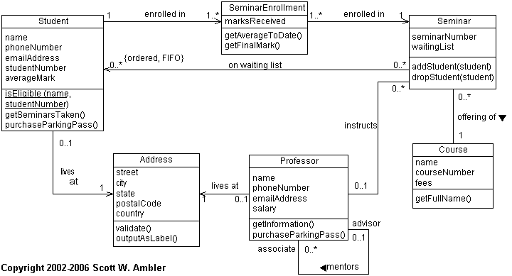
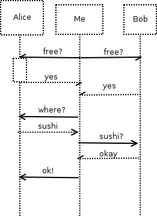

Consider the UML class diagram below (from
AgileData.org).

Describe all the relationships involving the Seminar class
(top right) in the diagram. Consider multiplicity.
Each Seminar has at least one SeminarEnrollment object (which
references a Student). There can be any number of students
on the waitlist. There can be either 0 or 1 professors instructing
the Seminar. The Seminar is an offering of a Course (although
there can be multiple Seminars for one Course).
What is the role of the SeminarEnrollment class? Why not
just have a direct relationship between Student and Seminar?
The SeminarEnrollment object holds the info for a registered
Student in a Seminar: e.g., that Student's marks.
If the SeminarEnrollment class did not exist, the marks would
have to be stored either in the Student (disconnected from the
course) or in the Seminar (disconnected from the Student).
What does the looping arrow below and to the right of the
Professor class mean? Consider multiplicity.
Professors can mentor other Professors: one would be the advisor,
and the other would be the associate. Each Professor can be
the advisor for any number of associates, but each associate may
have at most one advisor.
You want to meet up with your two friends, Alice and Bob, for
lunch on Saturday. You need to make sure they are both free and decide
together on where to go eat. Draw a UML sequence diagram for this.
Consider synchronous vs. asynchronous messages.
Many possible solutions:
